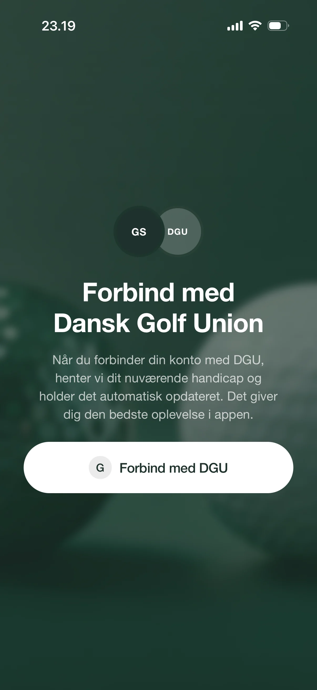
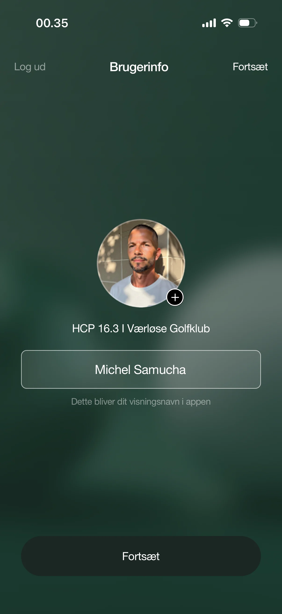

Golf has always been about more than the scorecard. There is the number that makes it official, your handicap, and there is everything around it: the round, the people, the story you tell afterwards. For too long those two sides have lived in different places. Golfsocial Sync with DGU brings them into one.
The two halves of every round
Every golfer keeps two kinds of score. One is official: maintained by the Danish Golf Union, earned over counting rounds, the number that says where you actually stand. The other is human: who you played with, the putt that dropped on the last, the round you will still talk about next season. Both matter. They have just never belonged to the same place. Our mission is simple: make official golf and social golf feel like one game again.

How the sync actually works
It starts with a single tap. When you connect your account with DGU, we pull in your current handicap and keep it updated automatically. No manual entry, no second app to check, no number to copy from one screen to another. Your handicap, your home club, your golfing identity, all of it arrives ready, exactly as it already stands on the official record.
And it does not stop at setup. Play a counting round, and the moment your marker approves it, the round finds its own way in. Your handicap updates on its own, and the round is waiting, pulled from DGU with the scorecard already filled in, before you have even left the clubhouse. You do not log the round. It finds you.

What you get
- An official handicap, always current: the number that counts updates itself, straight from DGU.
- Set up once: connect your account a single time, and the syncing happens quietly in the background.
- Your identity, brought in: handicap, home club, and name arrive automatically, so you are ready to play from the first screen.
- Ready to be shared: once your golf lives here, a round becomes something you can post to your group, not admin you have to do.
Connect once, and the number that counts takes care of itself. You just play.
From a number to a moment
Here is the part that matters most to us. The handicap is the foundation, but it was never the point. When a synced round lands, Golfsocial does not just file it away. It greets you by name, names the course you just played, and shows the round already filled in. Then it asks one simple thing: tell your friends about it. Post it to your group. Let them see the day, not just the score. The win, the comeback, the round that fell apart on the back nine and made for the best story. That is the side of golf we are really building for: the people you play with, and the reasons you keep coming back.
Built on official data
None of this works without trust, so we built on the real thing. The handicap you see in Golfsocial is your DGU handicap, not an estimate and not a parallel system. That is what lets your golf be social without ever being less than official. The serious side stays serious. The fun part just finally has a home next to it.
Where this is heading
Sync with DGU is one step toward something bigger: a single, connected home for your whole golf life, where the official record and the people you share it with finally sit side by side. Connect, play, improve, and do it together. That has always been the idea. This is what it looks like when the admin disappears and only the golf is left.